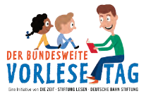
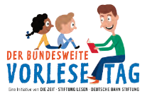

Bundesweiter Vorlesetag und Vorlesewettbewerb
— ein Tag der Literatur am RoRo
Dieser Beitrag erschien ursprünglich im Spickzettel/Dezember 2022. Aus datenschutztechnischen Gründen wurden personenbezogene Daten mit einem Hashtag ersetzt. Zur Originalausgabe
Und selbstverständlich gab es wieder den Vorlesewettbewerb. Im Mehrzweckraum wurde der offizielle Schulwettbewerb ausgetragen. Dort lesen unsere Sechsten den neuen Fünften Jahr für Jahr Stücke aus allen möglichen Schriften vor. Dieses Mal waren es # und # aus der 6/1, # und # aus der 6/2, aus der 6/3 # sowie # und schließlich # und # aus der 6/4. Unter anderem lasen sie aus Bestsellern wie »Dirk und ich«, »Herr der Diebe« und »Der Atlantis Komplex«, aber auch aus persönlichen Favoriten wie »Nevermoor« und »Allein in der Wildnis«. In der ersten Runde konnten alle Teilnehmer*innen Ausschnitte ihrer eigens ausgewählten Werke vortragen. Der zweite Teil bestand dann darin, eine Textstelle aus einem von der Jury ausgesuchten Buch, in diesem Fall »Pünktchen und Anton«, ebenfalls ein wunderbarer Klassiker von Erich Kästner, vorzulesen. Alle haben einen großartigen Beitrag zu diesem Wettbewerb geleistet und es war kaum möglich, einen klaren Sieger zu benennen. Doch haben es # und die Vorjahressiegerin, welche die Jury vertraten, schließlich geschafft. Während die Jury sich beriet, bestand noch die Möglichkeit, an einem kleinen Buch-Quiz teilzunehmen.
Nun, ohne großartig mit der Enthüllung, welche ja bereits teilweise bekannt ist, zu warten, hier die Sieger des diesjährigen Vorlesewettbewerbs am Romain-Rolland-Gymnasium: Den dritten Platz belegte # aus der 6/3 mit »Nevermoor« aus dem Jahr 2017. Auf den zweiten Platz wurde # mit dem Titel »Internat der bösen Tiere« gewählt. Den ersten Platz belegte # mit »Herr der Diebe« von Cornelia Funke. Vermutlich im Februar kann # unsere Schule, diesmal auf städtischer Ebene, repräsentieren.
Jeremias Ruff, in: Spickzettel
2022/12
 
